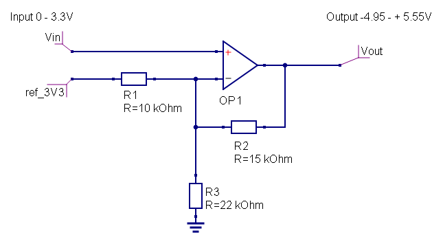

I'll be working on revising this post here, I was going to write it in a text document but realized it would be easier for me to get all the images if I just made it here. I was looking for a a save feature so I could wait to post until complete but could not find it. So please note this is all a work in progress and NEEDS further revision/information.
GPIO Overview
{kind=link}
VDD versus VDDA versus VDDC
- VDD is the digital 3.3V supply, use it to power external logic
-
VDDA is the analog reference for the microcontroller adc and dac (gpio/in/analog and gpio/out/analog). It is 3.3V derived from vdd with a simple ferrite+bypass cap. If you connect potentiometers to gpio, vdda
is the best reference. - VDDC is the supply for the audio adc/dac. Also 3.3V, but it has a separate linear regulator from +5V." on the current schematic "AVDD of U3 seems to be connected to VDDA in the schematic, but it really is connected to VDDC, not to VDDA."
Connecting sensors/actuators directly to GPIO's:
{kind=link}
Recommended pots 10k-50k
Useful Links:
* in and out examples
* Paul's Illustrator File for ins and Outs
* Schematics (need updating see note about VDDC connected to AVDD of U3)
Connecting gear with higher voltage levels, like Eurorack
Circuit Examples for Ins and Outs with gear using other voltage levels. (assume I know nothing and always double check before attempting this stuff, take no responsibility for damaged gear!)
from @kassu axolti DAC out offset and amplified for -4.95 to 5.55v

inputs using rail to rail op amp to clip down to 3.3V. Note: inverts the signal.
{kind=link}
Note: bypass caps between + power and ground and - power and ground is very helpful when working with eurorack power especially if it is on flying by boards.
The 5- and 7-pin headers (X3 and X4)
They are reserved for future expansions, using them will likely conflict with official future expansions.
They're designed to allow linking multiple boards together, exchanging multi-channel digital audio between them. Ongoing development....
What do the "R T S R T S..." pads mean?
They're a sort of hack-patchbay between the actual headphone, line-out, line-in jacks and the rest of the circuit. There are two rows of pads, the row closest to the connectors connects to the connectors, the other row connects to the circuit. These two rows are connected with a small trace on the backside. By cutting that trace, you can re-purpose the on-board jack to something else, while breaking out the signal to an external connector or circuit.
'R' 'S' and 'T' mean ring (right), tip (left) and sleeve (ground), and the three groups correspond to headphone, line out, and line in.
Applications:
* adding volume potentiometers
* split out the stereo jacks into dual mono
* convert the line input jack into an expression pedal input
* add a true bypass circuit for stompbox applications
JP1
Is for in-circuit-debugging, some developers use this while developing firmware and diagnosing complex issues. Setup guide.
JP2, JP3, Cutting the board
There are some slots in the board, to make it easier to reduce the size of Axoloti Core if required. If you do not need MIDI and DC power input, Axoloti Core works without that part. Or you can re-connect both parts together. Some mounting holes line up, allowing to sandwich-mount both parts with M3 spacers.
Don't just break the board by bending, cut along the slots with a small iron saw, or use a sharp snap-blade knife to score the circuit board, cut many times on the same line, and develop a v-shaped groove. Cutting circuit board makes a knife dull pretty fast... Once you have developed a deep v-shaped groove, you can snap the part.
JP2/JP3 legend: